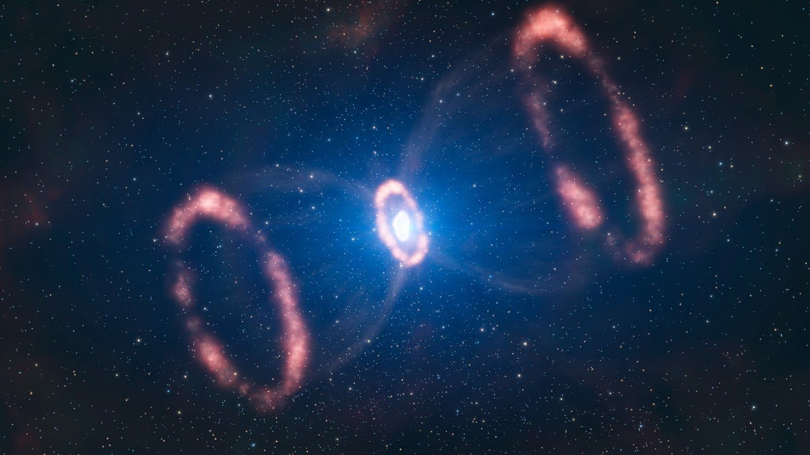
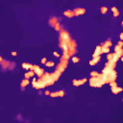

About Me
Education:
3rd Year Physics PhD Student, Yale University
BS Physics and Astronomy, Stony Brook University
Research Interests: Theoretical Astrophysics and Cosmology. Supernovae. Structure and Formation of the Universe.
Statement:
I am an astrophysicist and cosmologist, focusing on uncovering symmetries in the large-scale structures of our universe that exist
far beyond the outer limits of our solar system. My research is focused on computational astrophysics and cosmology, looking at the
evolution of the Halo-Gas-Galaxy Connection through both analytical models, N-body hydrodynamical simulations, and deep learning techniques.
These symmetries are well represented on Earth through various forms of art and music, demonstrating the same mathematical principles that
govern the subjects ranging from atomic structures to galactic dynamics. My drawings typically depict people and are primarily created using
black ink, which allows very little margin for error. For me, portraits go beyond merely capturing accurate proportions and constructing precise
bone structures. They always carry a narrative, and in line with the tradition often found in physics textbooks, where exercises are
“left for the reader”, I conceal the story within the artwork for the viewer to discover.
Blog: Trial and Error
Fun Fact: I speak English, Hebrew, Italian, some Mandarin, and am learning Russian!
Email: naomi.gluck@yale.edu
LinkedIn: https://www.linkedin.com/in/naomigluck/
Research

Modeling the Galaxy-Halo Connection: Developing an AI-accelerated Galaxy-Halo model
for multiwavelength cosmological surveys using N-body simulations and semi-analytical
simulations modeling the evolution of the dark matter halos surrounding galaxies and other substructure.
The aim is to obtain a computationally efficient, physically motivated model of the evolution of both baryonic
and dark matter. This is done via JAX auto-differentiation methods, allowing for a fully differentiable model
of the gas within dark matter halos, as an update to the original Baryon Pasting (BP) code. We also include dependencies on
mass accretion history, concentration history, AGN feedback, and cosmology (via Abacus-Summit).
Machine Learning the Circum-Galactic Medium with CAMELS
The circum-galactic medium (CGM) can feasibly be mapped by
multiwavelength surveys covering broad swaths of the sky. With multiple large datasets becoming available in the near future,
we develop a likelihood-free Deep Learning technique using convolutional neural networks (CNNs) to infer broad-scale physical
properties of a galaxy’s CGM and its halo mass for the first time. Using CAMELS (Cosmology and Astrophysics with MachinE Learning
Simulations) data, including IllustrisTNG, SIMBA, and Astrid models, we train CNNs on Soft X-ray and 21-cm (HI) radio 2D maps to
trace hot and cool gas, respectively, around galaxies, groups, and clusters. Our CNNs offer the unique ability to train and test on
“multifield” datasets comprised of both HI and X-ray maps, providing complementary information about physical CGM properties and
improved inferences. Applying eRASS:4 survey limits shows that X-ray is not powerful enough to infer individual halos with logarithmic masses
less than 12.5. The multifield improves the inference for all halo masses. Generally, the CNN trained and tested on Astrid (SIMBA) can most
(least) accurately infer CGM properties. Cross-simulation analysis – training on one galaxy formation model and testing on another – highlights
the challenges of developing CNNs trained on a single model to marginalize over astrophysical uncertainties and perform robust
inferences on real data. The next crucial step in improving the resulting inferences on the physical properties of CGM depends on our ability
to interpret these deep-learning models. (See Gluck et al. 2023 for additional details.)
Undergraduate Research
Stony Brook University - Uncertainty Quantifications
This particular uncertainty quantifications study looks at how incertitude in the winds
affect a 1 solar mass star and it's resulting white dwarf structure. I applied the publically available stellar evolution code, MESA (Modules for Experiments in Stellar Astrophysics)
to run simulations through the SeaWulf cluster to explore the wind parameter space. Three test suites were run, each with a different
statistical model: evenly spaces, Cauchy, and uniform random. Research objectives include studying and determining the boundaries of the
Reimers and Blocker wind parameters to see if the stellar evolution code completes with certain values, and to look at the final parameter values of the resulting white dwarf from each of the three test suites.
Technion Israel Institute of Technology - The Red Supergiant Problem
The Red Supergiant problem discusses the inconsistencies of observable supernovae,
as there is a gap between which progenitor stars lead to observable supernova explosions. Using MESA (Modules for Experiments in Stellar Astrophysics) I
simulated different progenitor stars of varying ZAMS (zero age main sequence) and wind and mass loss parameters. These mass loss parameters are key to understanding which stars will
be obscured by dust by the time they explode as core collapse supernovae.
Posters
APS 2023 April Meeting
Ureca Poster 2020
Observational Data SS Cyg

Publications
First Author Publications
1. Gluck et al. 2023, An Observationally Driven Multifield Approach for Probing the
Circum-Galactic Medium with Convolutional Neural Networks, accepted to MNRAS
In-Prep Publications
1. Gluck et al. 2024, JAX-enabled Baryon Pasting Model: Impact of Halo Formation History on SZ Angular Power Spectrum, to be submitted to ApJ.
2. Warburton, I., Gluck, N., Nagai, D., Ntampaka, M., Aung, H., Bose, S., Cosmology Dependence of the Universal Mass Accretion Rate of Dark Matter Halos, to be submitted to ApJ.
Additional Publications
1. Goffman, Gluck, and Soker 2020, Enhanced Mass Loss Rate During Evolution of Stars, accepted to MNRAS
2. Galactic Atmospheres Perspectives: A Multi-Wavelength,
Multi-Model Exploration of How Feedback Disrupts Gaseous Atmospheres
3. Galactic Atmospheres Perspectives: Galactic Gaseous Halos:
Mini-Clusters Disrupted by Feedback
Blog

Trial and Error
Click the link to learn about how to successfully get through a physics undergraduate degree
(starting with what to do while you're still in high school),
apply to graduate programs, and what a PhD program entails as I go through mine! My goal is
to share my experiences from undergrad that helped me get to where I am now, and offer some advice
to those who may need it.
This website also offers advice on how to deal with ADHD in an academic setting, as that generally makes
things much more difficult. More will be added to this site as I go through graduate school, with specific fellowship information,
required coursework, and how to make the most of your PhD program!
Artwork